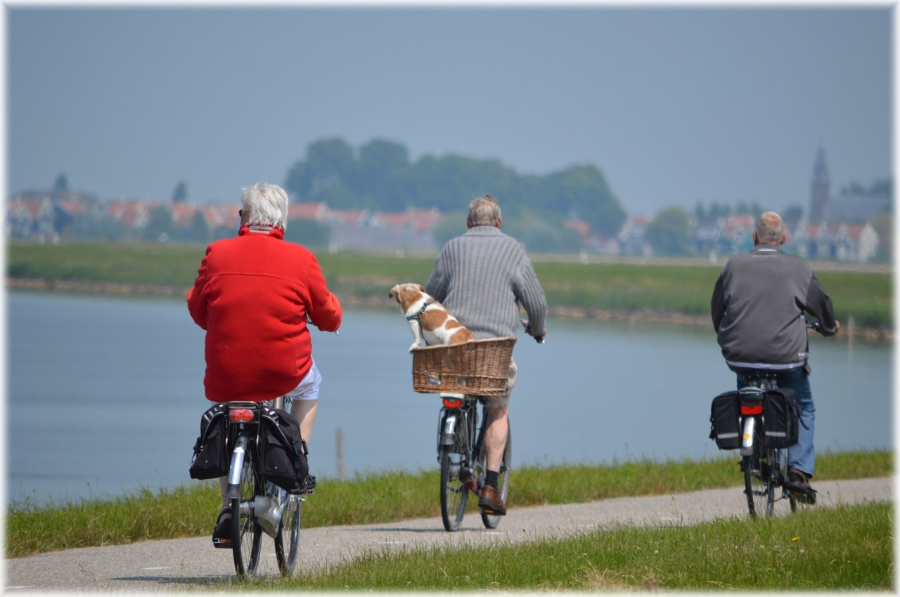

Evaluating urban accessibility
T. M. Logan, T. G. Williams, A. J. Nisbet, K. D. Liberman, C. T. Zuo, S. D. Guikema
Imagine a vibrant and healthy city.
Is it one where you, your children, and your grandparents have access to the things you need?
Why accessibility?

Things like green spaces, supermarkets, health care, and schools are super important for a city’s residents.
Good access to these services promotes (among other things): active and sustainable forms of transportation; community interaction; good nutrition; and health and well-being.
Others have explored access in cities.
They looked at inequities of access between different demographics and social groups, often finding that socially and economically disadvantaged populations are worse off.
These vulnerable people may not have access to cars or other resources to reach far-flung destinations. This makes them the most vulnerable to urban form.
We need to quantify accessibility so we can fix these issues.
What we did?
We developed an approach to measure proximity to urban services. Proximity is the distance or duration to a service and is an important factor of accessibility. Our approach improves on others by:
- Calculating proximity at the building level, rather than at an aggregated level (e.g. census tract).
- Using network distance, rather than straight-line buffers.
- Utilizing open (publicly available) data, rather than potentially outdated or private datasets.
- Presenting and analyzing the entire distribution of access, rather than imposing a (somewhat arbitrary) distance or time threshold or calculatig single statistic.
- Calculating travel distance and time for walking, cycling, or driving.
The results generated can accurately identify the vulnerable populations, and present an unbiased picture of city-wide accessibility. Additionally, our approach is scalable and can be easily applied to multiple different cities or regions.
We demonstrate the ease and applicability of our approach by calculating proximity to green spaces, supermarkets, high schools, and hospitals in the cities of Chicago, Baltimore, and Detroit. We compare the results to those generated using other methods, highlighting the enhanced insight.
What do our results show?
The results generated in our analysis can be used to plot empirical cumulative distribution functions (ECDFs) and maps of the spatial distribution of accessibility throughout a city (shown above).
ECDFs
 ECDFs show us the entire distribution of proximity throughout a city or multiple cities.
They remove the need for an arbitrary threshold that reduces accessibility into a "access-or-not" metric.
By very definition, imposing a threshold ignores the proximity of all residents greater than this threshold.
ECDFs show us the entire distribution of proximity throughout a city or multiple cities.
They remove the need for an arbitrary threshold that reduces accessibility into a "access-or-not" metric.
By very definition, imposing a threshold ignores the proximity of all residents greater than this threshold.
Often these are the residents we're trying to identify and assist.
Spatial maps
Spatial maps of accessibility show which areas of a city need attention. Analysis that calculate accessibility at aggregated units (e.g. census tracts or neigbourhoods) are subject to the modifiable areal unit problem (MAUP), from imposing arbitary boundaries. We calculate accessibility at the building-level, so our results are independent of these boundaries. Additionally, analysis using large spatial areas assume that the access from the center of each area is representative of the entire population within it. This is rarely the case. If necessary, results from our method can be aggregated up to a desired spatial size.
To read our paper, click here
Instructions on setting up OSRM, the network distance calculator we used in our model, can be found here.